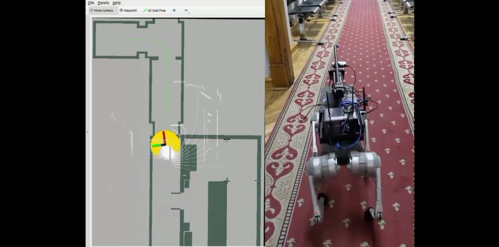
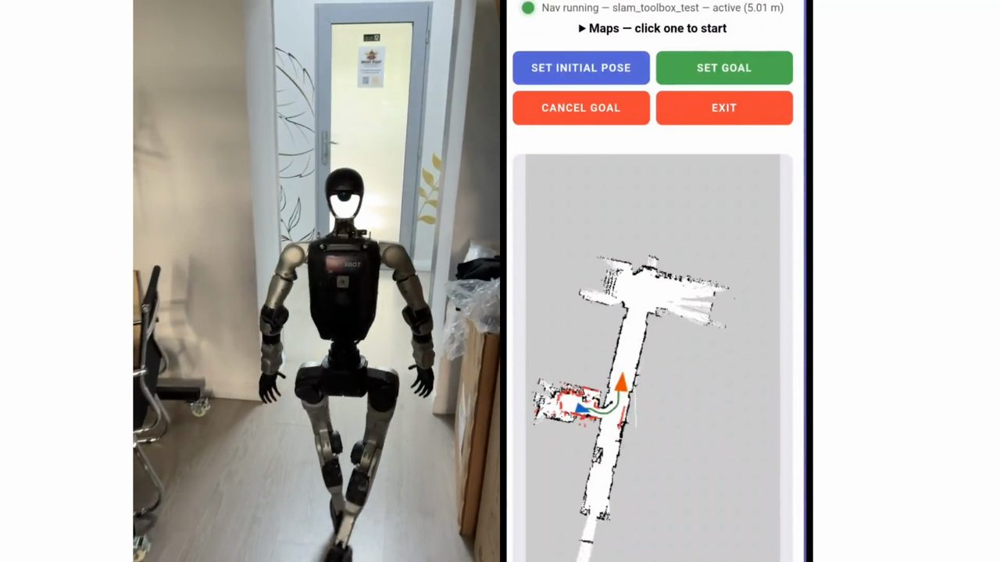
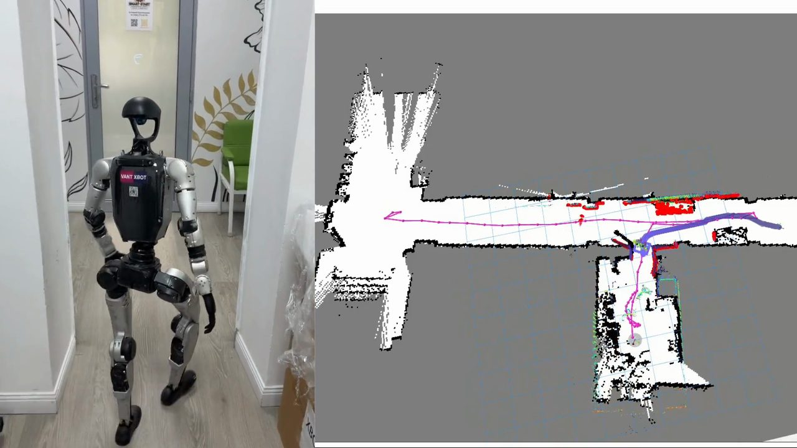
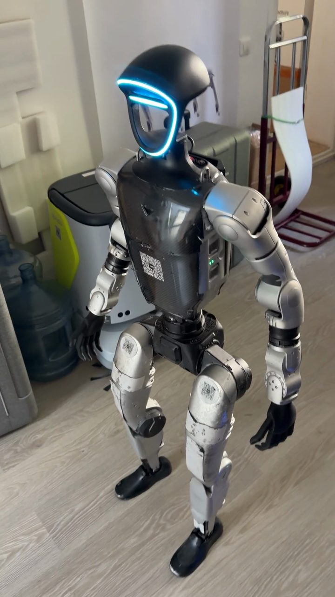
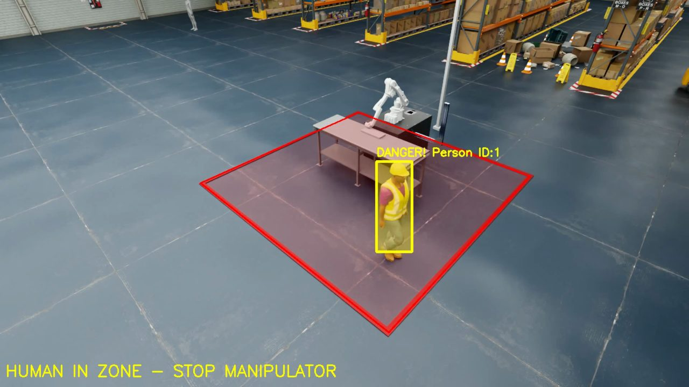
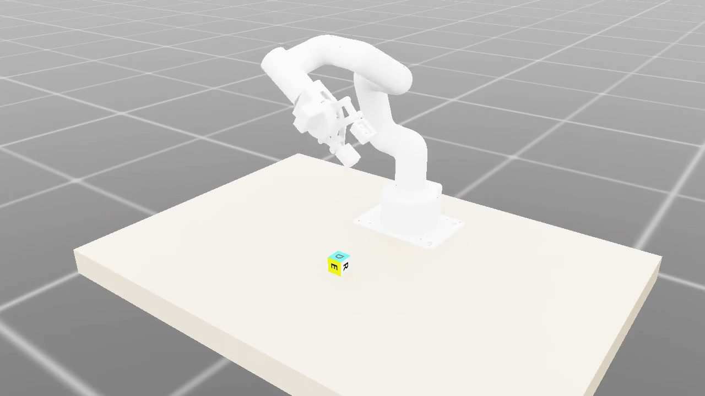

Jacques-Louis David, “Napoleon Crossing the Alps”, 1801
Projects
Six recordings. Press play to see the real footage.
Go2 building inspection

Plate I.[3:22, sound]
A Unitree Go2 quadruped inspects a building on its own.
Inspection points are chosen in a web interface. The robot orders them from nearest to farthest and plans a path.
It checks ceiling lights (working, or only half working), confirms a fire extinguisher is in place, and looks for cracks in a wall.
Then it calls the lift:
aligns itself to an AprilTag
presses the call button with a rod on a small servo arm
docks inside
presses the floor button
exits on the destination floor
A report is generated in the web interface and can be saved as PDF.
G1 control from a phone

Plate II.[2:26, sound]
A web app for the Unitree G1 humanoid, used from a phone.
Start SLAM with slam_toolbox and watch the occupancy map grow live while the robot walks. Save the map, then localise on a saved map and send the robot to goals.
G1 map-based navigation

Plate III.[1:26, sound]
The G1 walks from a room, along a corridor and into a lobby, following a planned path.
The occupancy-grid map and the path are shown beside the footage.
G1 voice control

Plate IV.[1:34, sound]
The G1 takes spoken commands.
It raises an arm, then walks out of the room, down the corridor and back.
Safety zone in Isaac Sim

Plate V.[0:49, silent]
A simulated warehouse with a marked zone around a manipulator.
When a detected person steps into the zone, the system raises “HUMAN IN ZONE — STOP MANIPULATOR”, and returns to “Zone: CLEAR” when they leave.
Pick-up policy

Plate VI.[0:05, silent]
A reinforcement-learning policy picks a cube up off a table in simulation.
About
I work on robot autonomy: mapping and navigation for humanoid and quadruped robots, manipulation and simulation.
From February to May 2026 I worked as a robotics engineer at XBOT, the authorised Unitree Robotics distributor in Almaty.